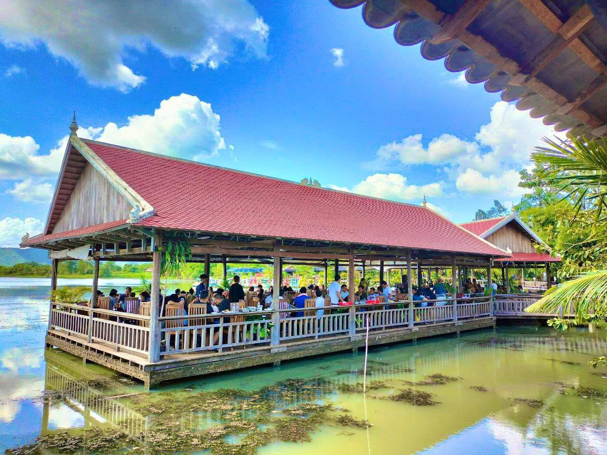
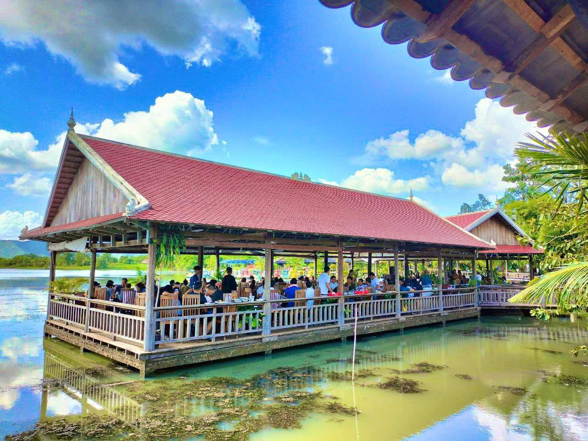
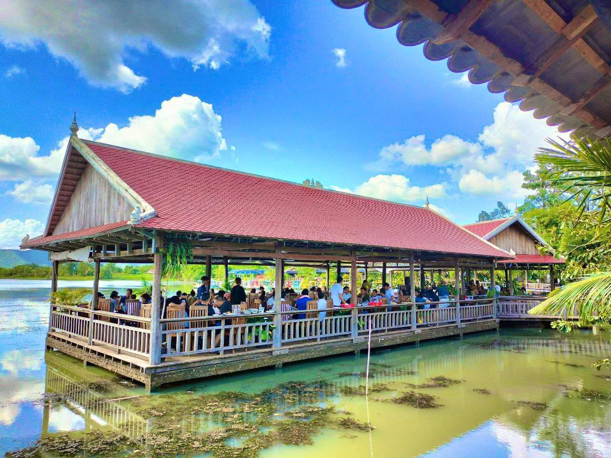

រមណីយដ្ឋានកំពូលពេជ្រឬអន្លង់ភ្ញៀវស្ថិតនៅមិនឆ្ងាយប៉ុន្មានពីទីអារាមព្រះពុទ្ធសាសនា ដែលទាក់ទាញចិត្ដភ្ញៀវទេសចរភ្លូកទឹកភ្លូកដី ប្រាថ្នាចង់ឃើញពុទ្ធបដិមារាប់ម៉ឺនគង់សមាធិតាមជម្រាលភ្នំរហូតដល់កំពូល រមណីយដ្ឋានទេសចរណ៍កំពូលពេជ្រ ឬអន្លង់ភ្ញៀវ ក៏កំពុងទទួលបានប្រជាប្រិយភាព ចំពោះសម្រស់សួនច្បារផ្កាភ្ញីគួបនឹងទេសភាពជួរភ្នំរលករលេញ ក៏ដូចជាក្យូសលម្ហែប្របតាមមាត់ទឹកលើផ្ទៃដីដ៏ធំល្វឹងល្វើយ។ ធ្វើដំណើរតាមផ្លូវជាតិ ៤១ បត់ស្ដាំតាមផ្សារត្រពាំងអណ្ដើក (បើបត់ឆ្វេងផ្សារអង្គតាសោម) ចម្ងាយប្រមាណ ១០ គីឡូម៉ែត្រ ផុតផ្លូវជាតិចូលផ្លូវលំ រមណីយដ្ឋានកំពូលពេជ្រ ស្ថិតក្នុងភូមិអន្លង់ភ្ញៀវ ឃុំត្រពាំងគ្រញូង ស្រុក ត្រាំកក់ ខេត្ដតាកែវ រង់ចាំស្វាគមន៍ភ្ញៀវជាមួយតម្លៃសំបុត្ររថយន្ដ ២ ម៉ឺនរៀលក្នុង ១ គ្រឿង។ ដោយប្រញាប់ចង់ឃើញទេសភាពសួនផ្កាឆ្លុះជួរភ្នំពណ៌បៃតងស្រស់ ភ្ញៀវទេសចរជាតិខ្លះម្នីម្នារួសរាន់សំដៅទីកាន់ទីឋានផ្ទាល់ ដើម្បីបានថតរូបបង្ហោះលើបណ្ដាញសង្គមបង្អួតមិត្ដភក្ដិតៗគ្នា។ ចំណែកឯភ្ញៀវខ្លះទៀត ដែលខំធ្វើដំណើរផ្លូវឆ្ងាយជាងមួយគីឡូម៉ែត្រ ក៏ឆ្លៀតចូលសម្រាកកាយនៅតំបន់ក្យូសសង់ប្របមាត់ទឹក ស្ថិតនៅខាងស្ដាំពេលឆ្លងកាត់ខ្លោងទ្វារបង់លុយតែប្រមាណ ១០០ ម៉ែត្រ។
រមណីយដ្ឋានបែបធម្មជាតិកែច្នៃមួយកន្លែងក្នុងខេត្តតាកែវ កំពុងទាក់ទាញអ្នកទេសចរមកទស្សនា ដែលមានទេសភាពអមដោយជួរភ្នំព័ទ្ធជុំវិញយ៉ាងស្រស់ស្អាត។ ក្នុងរមណីយដ្ឋាននេះមានសួនកម្សាន្ត និងចម្ការដំណាំជាច្រើនប្រភេទនៅតាមជើងភ្នំនិងចង្កេះភ្នំ និងមានគម្រោងសាងសង់កន្លែងកម្សាន្ត កន្លែងងូតទឹកជាច្រើនផ្សេងទៀតផងដែរ។ ក្រៅពីមានទេសភាពដ៏ស្រស់ស្អាតនៅទីនោះ ក៏មានលក់ អាហារឆ្ងាញ់ៗដ៏សម្បូរបែប ក្នុងតម្លៃសមរម្យទៀតផង។ រមណីដ្ឋានបានត្រូវរៀបចំឡើង នាពាក់ កណ្តាលឆ្នាំ ២០១៧ នៅតំបន់ព្រៃភ្នំ ដែលមានទេសភាពដ៏ស្រស់បំព្រង់គ្រប់រដូវកាល។
ដោយនៅក្នុងរមណីយដ្ឋាន កំពូលពេជ្រ មានកន្លែងកំសាន្តនិងកន្លែងញ៉ាំអាហារជាច្រើន និងមានទឹកធ្លាក់ដ៏វែងផងដែរ។